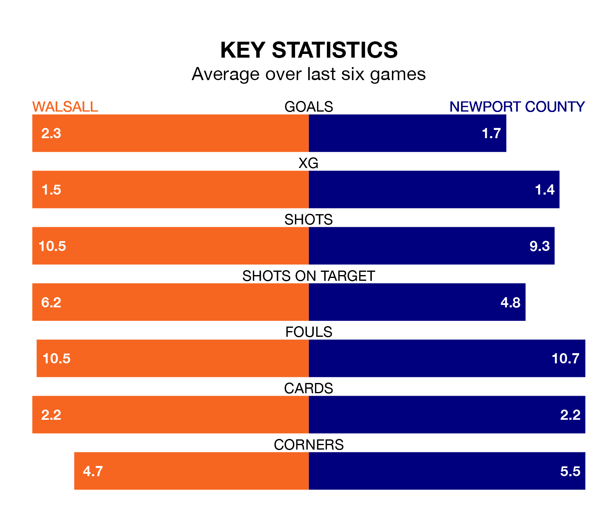

Newport County visit Walsall at the Poundland Bescot Stadium on Saturday on the back of three consecutive wins in EFL League Two.
Newport have picked up 14 points from their last six games, and they face a Saddlers side who have lost their last two matches, and collected 11 points from the last possible 18.
In the last 10 years, Walsall and Newport have played each other on 10 occasions. Walsall won one of them, Newport three, and they drew six times.
On average, the Saddlers scored 1.1 goals and the Exiles 1.3 in those matches.
Their last meeting was on October 20, when they played out a 3-3 draw.
In Will Evans, Newport have one of the league's sharpest shooters so far this season. He has notched 16 goals in 29 appearances, to sit third in the scoring charts.
His goal rate of one every 150 minutes is slightly quicker than that of Freddie Draper, Walsall's top scorer with a goal every 164 minutes, and a total of 10 goals in 21 games.
With 42 goals in 29 games so far this season, County are scoring at below the league average rate with 1.4 goals per game. And they are conceding more than average, letting in 46 goals at a rate of 1.6 per game.
The Saddlers, meanwhile, are average scorers, with 1.5 goals per game. They have also conceded 1.5 goals per game.
The hosts are 15th in the table after 28 games, of which they have won 10 and drawn eight, earning 38 points.
The Exiles are two places ahead of Walsall in 13th, with 11 wins and seven draws putting them on 40 points.
Walsall's last match was on February 3, a 1-1 draw against Gillingham, with Isaac Hutchinson getting the goal for the Saddlers.
Newport beat Swindon Town 2-1 last time out, also on February 3, with Sebastian Palmer-Houlden and Will Evans on the scoresheet.
Updated: 11:43 (UTC), 08/02/24